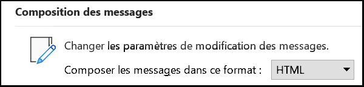
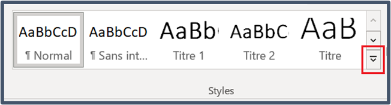
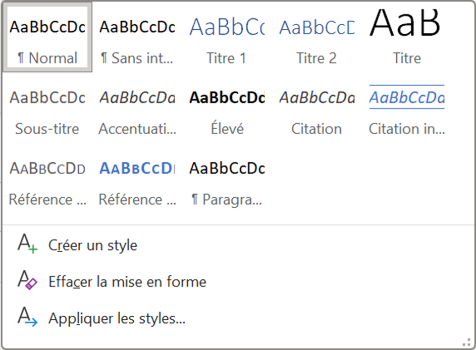

Rendre vos courriels accessibles
Un courriel accessible est important pour les personnes handicapées, mais aussi pour tout le monde. Découvrez comment créer un e-mail accessible dans Outlook.
Format du texte
Outlook offre trois options de format : HTML, texte brut et texte enrichi. Parmi ces trois options, le format HTML est celui qui rend le contenu le plus accessible.
Le format HTML comporte plusieurs avantages afin de rendre vos courriels plus inclusifs :
- Contenu structuré: il est possible de structurer et de hiérarchiser le contenu à l’aide de titres, de paragraphes, de listes et de tableaux. Cette structure aide les utilisateurs de technologies adaptées à parcourir facilement le contenu.
- Mise en forme du texte : vous pouvez choisir le style de votre texte en utilisant les styles de texte intégrés, comme des niveaux de titres, les styles Élevé (texte en gras) et Accentuation (texte en italique) pour aider à communiquer le sens de votre message au profit des personnes malvoyantes.
- Hyperliens : cette option permet d’insérer des hyperliens pour fournir un contexte supplémentaire ou des références. La technologie adaptée peut détecter et annoncer les liens, ce qui permet à l’utilisateur d’accéder facilement aux renseignements pertinents.
- Texte de remplacement pour les images : il est possible d’utiliser un texte de remplacement à la place d’images, ce qui aide certains utilisateurs à comprendre plus facilement le contenu. La technologie adaptée peut lire le texte de remplacement à voix haute, donnant ainsi un contexte aux images.
L’utilisation du format HTML est conforme aux règles d’accessibilité en vigueur, notamment les normes WCAG et EN 301 549.
Pour rédiger vos courriels en format HTML :
- sélectionnez Fichier (Alt + F);
- sélectionnez Options (V);
- sélectionnez Courrier (C);
- dans la liste déroulante Composition des messages (Alt + É), choisissez HTML;
- sélectionnez OK.

Message bilingue (le cas échéant)
Dans la mesure du possible, évitez d’envoyer des courriels bilingues parce qu’ils peuvent créer divers problèmes d’accessibilité et de convivialité pour de nombreux utilisateurs.
Si vous devez utiliser des courriels bilingues, veillez à ce qu’ils soient aussi accessibles que possible.
- L’ajout d’un signet permet à l’utilisateur de passer directement au texte rédigé dans la langue de son choix.
- Indiquez où se trouve le texte dans l’autre langue :
- dans les courriels où l’anglais est la première langue utilisée, faites précéder le texte en anglais de la mention « Le français suit l’anglais »;
- dans les courriels où le français est la première langue utilisée, faites précéder letexte en français de la mention « English follows ».
Définir une langue
Si le document entier est en anglais mais que certaines sections renferment des passages en français, le lecteur d’écran configuré pour le texte anglais essaiera de prononcer les termes français et le résultat ressemblera à du charabia.
- Effectuez le marquage de la langue pour aider les lecteurs d’écran à lire correctement le texte en français. Utilisez cette fonction pour modifier la langue de vérification de certaines sections d’un document :
- définissez la langue de vérification (Alt, R, J, L);
- mettez en évidence le texte pour lequel vous voulez définir une langue différente;
- sélectionnez l’onglet Révision, puis sélectionnez Langue > Définir la langue de vérification.
Langage clair
Évitez les styles d’écriture trop complexes.
- Donnez les renseignements les plus importants en premier.
- Déterminez qui sont les destinataires pour choisir le ton et le niveau de détail appropriés. Visez un niveau de langue courant (jusqu’à la 8ième année) plutôt qu’un langage scientifique (jusqu’au niveau de doctorat) lorsque possible.
- Présentez les idées dans un ordre logique qui rend le texte facile à suivre et à comprendre.
- Choisissez un vocabulaire simple et évitez les mots complexes ou le langage politique.
- Utilisez des phrases courtes (de 20 mots ou moins).
- Utilisez la forme active (par exemple, « ils ont décidé » au lieu de « une décision a été prise »).
- Définissez les abréviations à leur première occurrence (par exemple, « Services partagés Canada (SPC) »).
Resources
- Guide de rédaction du contenu du site Canada.ca — Langage clair et simple
- Write for your Reader—A plain language handbook (en anglais seulement)
- Putting plain language into practice (en anglais seulement)
- Plain Language Audit Tool—A checklist to review documents (en anglais seulement)
Styles
Un style est un ensemble d’attributs de mise en forme intégrés que vous pouvez appliquer au contenu de votre document, y compris les titres. Un style contient des attributs de mise en forme tels que la couleur et la taille des caractères, si le texte est en gras ou en italique, ainsi que l’espacement des paragraphes et des lignes. Lorsque vous appliquez un style à un texte,
vous appliquez en une seule étape facile tous les attributs de mise en forme contenus dans le style particulier, et vous obtenez une présentation uniforme dans tout le document.
- N’utilisez pas la mise en forme directe (modification de l’apparence à l’aide des attributs de caractères regroupés sous Police de l’onglet Accueil) pour modifier l’apparence des titres ou du texte normal. Il est préférable de modifier un style.
- Évitez d’insérer des espaces supplémentaires ou des retours. Il est préférable de modifier un style de paragraphe pour modifier l’espacement.
- N’utilisez pas les options « Gras » ou « Italique » du groupe Police de l’onglet Accueil. La technologie adaptée n’indiquera pas ces styles pour l’utilisateur. Appliquez plutôt le style Élevé au texte que vous souhaitez mettre en gras et le style Accentuation au texte que vous souhaitez mettre en italique. Tous les utilisateurs auront ainsi la même information.
Utilisation d’un style
Le volet Styles se trouve sur l’onglet Format du texte. Mettez en évidence le texte que vous voulez modifier, par exemple, un titre dans votre message.
Pour ouvrir le volet Styles, cliquez sur la flèche d’expansion (Alt, X, S). Sélectionnez Titre. Le style Titre sera mis en évidence dans la liste et sera appliqué au texte sélectionné.


Modifier un style
- Placez votre curseur à l’endroit du texte dont vous voulez modifier le style.
- Appuyez sur les touches Ctrl + Maj + S.
- Sélectionnez Modifier dans la boîte de dialogue Appliquer les styles.
- Dans le groupe Mise en forme, effectuez les modifications souhaitées (style de police, taille des caractères, alignement, interligne ou tabulations).
- Déterminez si le changement de style s’applique au document en cours ou aux nouveaux documents basés sur ce modèle. L’option Uniquement dans ce document s’applique par défaut.
- Sélectionnez OK.
Remarque : Lorsque vous modifiez un style, le changement s’appliquera à toutes les occurrences du texte ayant ce style, pas seulement au texte sélectionné.
Polices de caractères
Les polices de caractères utilisées le plus souvent sont Arial ou Calibri (polices sans empattement), et Times New Roman ou Cambria (polices avec empattement). Les polices avec empattement peuvent créer des problèmes d’accessibilité pour les personnes atteintes de difficultés cognitives ou visuelles.
Veillez à utiliser une police de caractères sans empattement comme Arial, Calibri, Verdana, etc.
Attributs de la police de caractères
Il faut toujours :
- s’assurer que les polices de caractères ont un espace d’interligne suffisant;
- s’assurer que la taille des caractères du texte Normal est de 12 à 14 points;
- utiliser le soulignement pour les hyperliens uniquement;
- inclure une description textuelle des symboles utilisés (par exemple, pour un symbole de panneau d’arrêt, le texte dit « Halte aux déchets »).
Évitez :
- d’utiliser des attributs de police décoratifs, comme des lettrines, des effets ou WordArt;
- d’utiliser des symboles et des icônes comme seul moyen de communiquer l’information;
- d’utiliser des exposants et des indices;
- d’inclure des symboles et des équations mathématiques. Si vous devez inclure ces informations, assurez‑vous d’utiliser le langage de balisage mathématique (MathML);
- de mettre plus de quelques mots en italique pour éviter que le texte soit difficile à lire;
- le gouvernement du Canada recommande l’emploi de l’italique uniquement pour les titres de lois, de règlements et de causes judiciaires;
- d’appliquer des styles visuels (couleurs, gras, etc.) comme seul moyen de transmettre des informations.
Utilisation de la couleur
N’utilisez pas la couleur comme seul moyen de transmettre de l’information. Si vous utilisez la couleur pour communiquer un message, utilisez toujours une ou plusieurs autres méthodes pour transmettre la même information (par exemple, des motifs, des étiquettes, des symboles, etc.).
Contraste de couleurs
- Assurez‑vous d’avoir un contraste suffisant entre le texte et la couleur d’arrière‑plan.
- Pour être accessible, le contraste (texte foncé sur fond clair ou texte clair sur fond foncé) doit être supérieur ou égal à :
- 4,5:1 pour le texte de petite taille (moins de 14 points);
- 3:1 pour le texte de grande taille (14 points ou plus).
- Mesurez le contraste entre les couleurs de texte et d’arrière‑plan à l’aide d’un outil comme le WebAIM’s Colour Contrast Checker (en anglais seulement).
- Limitez l’utilisation de couleurs vives et saturées.
- Évitez la couleur pour le texte sauf s’il s’agit d’un hyperlien.
Thèmes Outlook
Évitez de modifier le thème Outlook par défaut (Office). L’utilisation d’autres thèmes peut créer des problèmes d’accessibilité.
Structure sémantique
Titres
- Utilisez les styles de titre intégrés d’Outlook.
- Placez les titres dans un ordre logique descendant et hiérarchique :
- le Titre 1 est le titre du courriel ou l’intitulé du contenu principal;
- le Titre 2 est un titre de section principale;
- le Titre 3 est une sous‑section du titre 2, et ainsi de suite.
- Séparez le contenu en parties ou en sections.
- Ajoutez des titres en choisissant un niveau de titre dans la galerie Styles de l’onglet Format du texte (CTRL + Maj + S).
Paragraphes
- Limitez les paragraphes à un seul sujet.
- Les phrases courtes facilitent la lecture et la mémorisation des renseignements importants.
- Lorsque vous abordez un nouveau sujet, commencez un nouveau paragraphe.
Listes
- Utilisez des listes à puces pour rendre l’information plus facile à lire.
- Utilisez des listes numérotées pour illustrer une séquence d’étapes.
- Appliquez des listes à l’aide des boutons Puces (Alt, L, K) ou Numérotation (Alt, L, N) dans le groupe Texte simple de l’onglet Message.
Images accessibles
- Évitez d’utiliser des images de texte (les logos et infographies sont acceptables s’ils sont accompagnés d’un texte de remplacement approprié).
- Toutes les images doivent être accompagnées d’un texte de remplacement, sauf si l’image est purement décorative et ne transmet aucune information utile.
- Marquez les images décoratives en ajoutant le mot « Décoratif » dans le champ des propriétés du texte de remplacement.
- Utilisez un texte de remplacement efficace pour décrire l’information ou la fonction d’une image.
- Évitez d’utiliser « image de » ou « photo de » dans le texte de remplacement de l’image puisque le lecteur d’écran annoncera déjà le contenu comme une image.
- Si l’image a une légende, n’utilisez pas le même texte dans le texte de remplacement.
- Évitez d’utiliser des GIF et des animations puisqu’ils créent des problèmes d’accessibilité importants pour certains utilisateurs.
Images alignées sur le texte
Lorsque vous insérez des images (aussi appelées illustrations) dans Word, définissez l’image comme étant Alignée sur le texte puisqu’il s’agit de la seule option accessible pour que les technologies adaptées voient l’image. N’entourez pas une image de texte puisque cela empêche certains utilisateurs d’accéder aux images et au texte de remplacement.
Texte de remplacement
Le texte de remplacement sert à décrire les images et autres contenus non textuels. Les éléments visuels tels que les photos, les icônes, les diagrammes et les tableaux doivent être accompagnés d’un texte de remplacement qui décrit brièvement le contenu pertinent de l’image. Vous devez ajouter un texte de remplacement aux images ou graphiques significatifs pour qu’ils soient accessibles aux utilisateurs de technologies adaptées.
Lorsque vous rédigez un texte de remplacement, pensez à la manière dont vous utilisez les images. Ne tenez pas compte des détails qui n’ont pas de lien avec le document. Par exemple, une image illustrant un groupe d’étudiants apparaît dans un document portant sur l’embauche d’étudiants pour l’été.
- Correct : Étudiants en formation dans une salle de conférence.
- Trop long : Cinq étudiants en tenue de travail sont assis dans une salle de conférence et regardent un écran de projection tandis que l’animateur fait un geste en direction de l’étudiant le plus à gauche.
- Hors contexte : Étudiants rassemblés autour d’une table de conférence, vêtus de pantalons, de chemises et de vestons aux couleurs sombres.
Ajouter un texte de remplacement
- Sélectionnez une image ou un graphique.
- Faites un clic‑droit sur l’image et sélectionnez Afficher le texte de remplacement (Maj + F10, T).
- Ajoutez une description.
Ajouter une légende
- Sélectionnez une image.
- Faites un clic‑droit sur l’image et sélectionnez Insérer une légende (Maj + F10, D).
- Ajoutez une légende.
Descriptions longues
Les descriptions longues fournissent les informations essentielles contenues dans une image complexe sous forme de texte. Tout lecteur, quelles que soient ses capacités, peut avoir de la difficulté à comprendre des images complexes sans une explication écrite plus longue.
- Au moment de rédiger une longue description, demandez‑vous quels éléments du graphique seront les plus utiles au lecteur. Par exemple, le choix des couleurs d’un diagramme circulaire n’est pas pertinent comparé au tableau de données utilisé pour créer le diagramme.
- Placez les descriptions longues immédiatement après l’image, dans le corps du texte.
- Si vous ne pouvez pas placer la description longue immédiatement sous l’image complexe, faites suivre l’image d’un hyperlien qui mène à un autre endroit du document, comme un appendice ou une annexe. Assurez‑vous qu’un lien permet aussi au lecteur de revenir à l’image originale.
- Veillez à inclure toutes les informations et données contenues dans l’image complexe, comme les données des tableaux ou les résultats d’enquêtes.
Utilisation de tableaux
- N’utilisez pas les tableaux comme mise en page, utilisez-les uniquement pour des données.
- Utilisez des en-têtes de tableau pour indiquer clairement le contenu des rangées et des colonnes.
- Évitez de fusionner, de fractionner ou de laisser des cellules vides dans un tableau.
- Ajoutez un texte de remplacement à chaque tableau.
- N’utilisez pas l’option Dessiner un tableau pour ajouter un tableau.
Ajouter un tableau
- Insérez un tableau en utilisant les options de l’onglet Insertion (Alt, S, ÇT, I).
- Choisissez le nombre de rangées et de colonnes.
- Sélectionnez OK.
- Les cases à cocher Ligne d’en-tête et Première colonne de l’onglet Création de tableau sont activées par défaut. Évitez de décocher ces cases, car il s’agit des options d’accessibilité par défaut.
Hyperliens pertinents
Microsoft Office affiche automatiquement les hyperliens sous forme de texte bleu souligné. Cela aide les lecteurs à repérer les hyperliens dans un document.
Remarque : Utilisez uniquement le soulignement pour les hyperliens dans votre contenu numérique.
- Le texte des hyperliens doit être pertinent et indiquer la page de destination (par exemple, « Soutien fédéral de la croissance et de l’innovation en entreprise pour les technologies propres, 2020 »).
- Placez le site Web de destination (nom de l'entreprise) à la fin du lien, entre parenthèses; par exemple (Canada.ca). Il s’agit là d’une autre pratique exemplaire pour aider l’utilisateur à savoir où mène l’hyperlien : s’agit‑il d’un site interne du gouvernement du Canada (GC) ou d’un site externe?
- Évitez d’utiliser « Cliquez ici » ou autre texte d’hyperlien ambigu comme « Lire davantage » ou « Continuer ».
Signets
Un peu comme une table des matières, les signets vous permettent de créer des liens vers certaines parties d’un courriel, ce qui permet à l’utilisateur d’accéder directement à une partie particulière du message.
La création d’un signet vous permet de choisir un sujet dans votre courriel vers lequel vous pouvez ensuite insérer un lien.
Pour créer un signet :
- Sélectionnez le texte auquel l’hyperlien du signet doit mener.
- Sous l’onglet Insertion, dans le groupe Liens, sélectionnez Signets (Alt, S, ÇI).
- Dans le champ Nom du signet, entrez un nom pertinent (par exemple, « Section en français »). Remarque : les espaces et les caractères spéciaux ne peuvent pas être utilisés dans les noms de signet.
- Sélectionnez Ajouter (Alt + A).
Pour créer un lien vers votre signet :
- Sous l’onglet Insertion, dans le groupe Liens, sélectionnez Lien, puis Insérer un lien (Alt, S, I2, I).
- Dans la boîte de dialogue Insérer un lien hypertexte, sélectionnez Emplacement dans ce document (Alt + A).
- Ajoutez un texte pertinent dans le champ de saisie Texte à afficher (Alt + T) [par exemple, « Section en français »].
- Dans le groupe Signets, sous Sélectionner un emplacement dans ce document (Alt + C), sélectionnez le nom du signet que vous avez créé.
- Sélectionnez OK.
Signatures de courriel accessibles
Créez une signature de courriel qui apparaîtra au bas de tous vos courriels sortants avec la fonction de signature intégrée à Outlook, dans les paramètres du courrier.
Remarque : Vérifiez les exigences de votre ministère concernant le formatage et le contenu des signatures.
- Allez à Fichier (Alt, F).
- Sélectionnez Options (V).
- Dans la boîte de dialogue Options Outlook, sélectionnez Courrier (C).
- Dans la section Composition des messages, sélectionnez Signatures (Alt + G).
- Sélectionnez Nouveau (Alt + N).
- Donnez un nom à la signature (par exemple, courante, informelle ou officielle, etc.).
- Placez le curseur dans le champ de signature (Alt + I et Tab jusqu’au champ) et entrez des éléments comme une salutation (Merci) et vos nom, titre, pronom, etc.
- Utilisez les options de mise en forme disponibles pour modifier l’apparence. a. Utilisez une taille de caractères appropriée (12 points ou plus).
- Sélectionnez OK.
- Sélectionnez OK de nouveau.
Remarque : N’utilisez pas d’images de texte dans votre bloc de signature (sauf s’il s’agit d’un logo).
Vérification de l’accessibilité
Le vérificateur d’accessibilité ne remplace pas la connaissance des principes de création d’un document accessible. Il s'agit d’un outil automatisé qui décèle seulement certains problèmes d’accessibilité.
Vérificateur d’accessibilité d’Outlook
- Sous l’onglet Révision (Alt, R).
- Sélectionnez Vérifier l’accessibilité (A).
Lecteur d’écran Narrateur de Windows
- Le Narrateur permet de déceler certains problèmes d’accessibilité pour les utilisateurs de lecteurs d’écran.
- Appuyez sur la touche Windows (⊞) + Ctrl + Entrée pour démarrer et arrêter le Narrateur.
- En vous déplaçant à l’aide du clavier, vous pouvez tester le contenu du courriel pour vérifier si un lecteur d’écran reconnaîtra correctement votre contenu.
Détails de la page
- Date de modification :